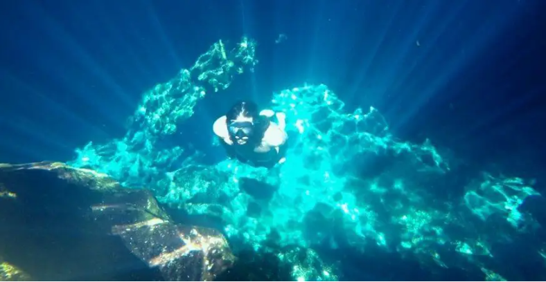
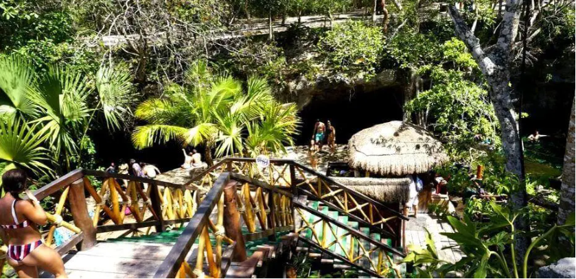

Popular entre los turistas de Tulum y Coba, el Gran Cenote es en un cenote abierto, parecido a un río, flanqueado por dos lugares de buceo y rodeado de cuevas y cavernas. Las aguas son cristalinas, tanto que a menudo se pueden ver tortugas nadando en sus aguas. También es un lugar estupendo para practicar el esnórquel.
Los buceadores pueden explorar las formaciones rocosas a través de una serie de cuevas de paredes blancas.
Sugerencia: Si ves tortugas en el Cenote, asegúrate de mantener la distancia, no las asustes y no te acerques demasiado.

Guía de Viaje Gran Cenote
La entrada del Gran Cenote está situada justo al lado del aparcamiento. Después de pagar la entrada (500 pesos), debes ducharte antes de entrar en el agua: es una práctica habitual en todos los cenotes de la Península de Yucatán para proteger su ecosistema. Una pasarela de madera en forma de T conduce al cenote, y cada camino lleva al agua del cenote.
La entrada del Gran Cenote está situada justo al lado del aparcamiento. Después de pagar la entrada (500 pesos), debes ducharte antes de entrar en el agua: es una práctica habitual en todos los cenotes de la Península de Yucatán para proteger su ecosistema. Una pasarela de madera en forma de T conduce al cenote, y cada camino lleva al agua del cenote.
Sugerencia: Hay dos conjuntos de escaleras que descienden a las aguas del cenote. Para salir y relajarnos, preferimos la piscina natural que hay al final del segundo tramo de escaleras, ya que era más tranquila y relajante.
Hay dos conjuntos de escaleras que descienden a las aguas del cenote. Para salir y relajarnos, preferimos la piscina natural que hay al final del segundo tramo de escaleras, ya que era más tranquila y relajante.